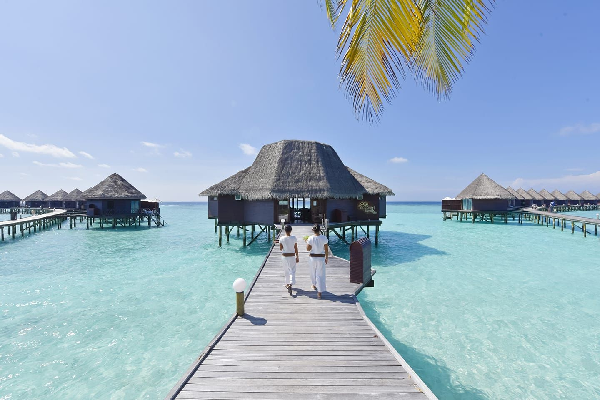

Пляжный отдых
Мальдивы
Мальдивы - эталон роскошного пляжного рая. Здесь вас ждут ослепительно белые, как пудра, пески, невероятно прозрачная бирюзовая вода в спокойных лагунах и полное ощущение уединения, так как каждый курорт занимает свой остров.
Курорты предлагают высочайший уровень сервиса и роскоши: от знаменитых вилл на воде с прямым спуском в океан до комфортабельных бунгало на берегу. Подводный мир фантастически богат: яркие рыбы, черепахи и безопасные акулы видны уже у берега при сноркелинге, а дайвинг считается мировым классом.
Атмосфера - это чистое расслабление и романтика среди пальм и бирюзовых вод, особенно на фоне потрясающих закатов. Идеальный климат с теплом круглый год, лучшая погода - в сухой сезон (ноябрь-апрель).
Бали
Бали - идеальное место для пляжного отдыха с теплым климатом, бирюзовым океаном и пляжами на любой вкус.
Шумные Кута и Семиньяк хороши для серфинга и вечеринок, а уединенные Улувату и Пандава - для спокойного отдыха. Песок варьируется от белоснежного до вулканического, а инфраструктура включает отели, рестораны и спа.
Лучшее время для поездки - сухой сезон (апрель–октябрь), когда мало дождей, а море спокойное. Пик сезона - июль–август: идеальная погода, но больше туристов. В сезон дождей (ноябрь–март) возможны ливни и волны, но цены ниже, а зелень особенно живописна.
Остров сочетает пляжный отдых с культурой — рядом храмы, рисовые террасы и дружелюбные местные. Даже в дождливые месяцы можно найти солнечные дни и тихие бухты.
Сейшелы
Сейшелы предлагают эталонные пляжи: длинные полосы мелкого белого песка, омываемые кристально чистыми бирюзовыми водами Индийского океана. Уникальность им придают живописные гранитные валуны, обрамляющие многие бухты и создающие неповторимый ландшафт.
Эти пляжи часто немноголюдны и уединены даже на главных островах. Океан идеален для купания и снорклинга у рифов благодаря спокойной, прозрачной воде и богатой морской жизни. Окружение из кокосовых пальм завершает идиллическую картину.
Атмосфера здесь — расслабленная роскошь и единение с природой. Это направление для покоя, а не для шумных развлечений. Отдых относится к премиум-классу, лучшие условия для спокойного океана — в межмуссонные периоды (апрель-май, октябрь-ноябрь).